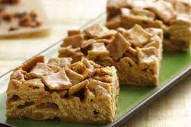

Cinnamon Toast Crunch Squares

Description
This recipe will lead you down a path from which there is no return. Forget what you thought you knew about snacking, get ahead of the game by stocking up on insulin, and preheat your God-damned oven.
Ingredients
- Mini Marshmallows
- Cinnamon Toast Crunch
- Butter
Directions
- Melt butter and mini marshmallows together over medium heat.
- Slowly add Cinnamon Toast Crunch and mix gently, careful not to crush the squares into dust.
- In a cake pan lined with parchment paper, unload your mixture. Carefully level it out, and move to the fridge for thirty minutes to set.
- Remember to turn off the oven that you were so aggressively asked to preheat, despite no apparent call for it.